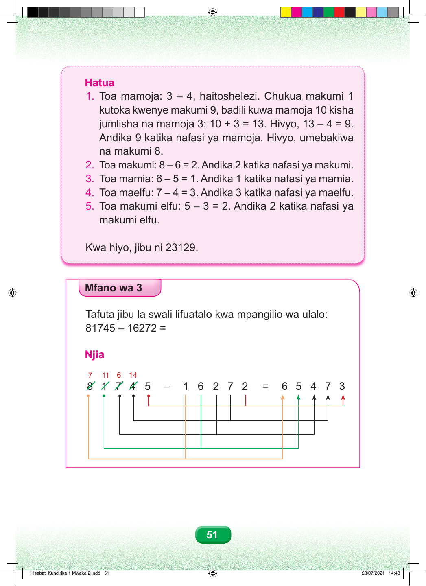

Hatua 1. Toa mamoja: 3 – 4, haitoshelezi. Chukua makumi 1 kutoka kwenye makumi 9, badili kuwa mamoja 10 kisha jumlisha na mamoja 3: 10 + 3 = 13. Hivyo, 13 – 4 = 9. Andika 9 katika nafasi ya mamoja. Hivyo, umebakiwa na makumi 8. 2. Toa makumi: 8 – 6 = 2. Andika 2 katika nafasi ya makumi. 3. Toa mamia: 6 – 5 = 1. Andika 1 katika nafasi ya mamia. 4. Toa maelfu: 7 – 4 = 3. Andika 3 katika nafasi ya maelfu. 5. Toa makumi elfu: 5 – 3 = 2. Andika 2 katika nafasi ya makumi elfu. Kwa hiyo, jibu ni 23129. Mfano wa 3 Tafuta jibu la swali lifuatalo kwa mpangilio wa ulalo: 81745 – 16272 = Njia 7 11 6 14 8 1 7 4 5 – 1 6 2 7 2 = 6 5 4 7 3 51 Hisabati Kundirika 1 Mwaka 2.indd 51 23/07/2021 14:43